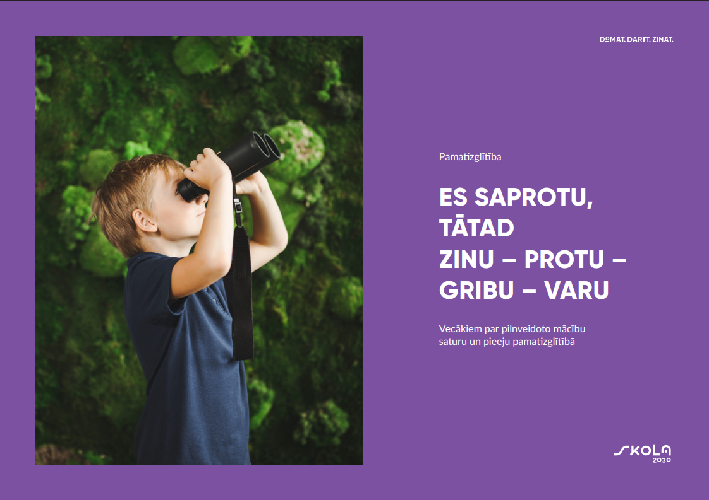

Mēs ticam, ka veiksmīgs mācību un audzināšanas process veidojas tikai ciešā un atklātā skolas un ģimenes sadarbībā. Šajā sadaļā esam apkopojuši svarīgāko informāciju, kas palīdzēs Jums sekot līdzi skolas ikdienai un aktīvi iesaistīties tās attīstībā.
Iespēja sniegt savu ieguldījumu skolas vides un izglītības kvalitātes uzlabošanā. Uzziniet, kā kļūt par biedru vai atbalstīt skolu.
Vecāku pārstāvniecība, kas aktīvi iesaistās skolas lēmumu pieņemšanā un iekšējās kārtības jautājumu risināšanā.
Aktuālā informācija par skolēnu ikdienas ēdināšanu, iknedēļas ēdienkarte un informācija par veselīgu uzturu.

Buklets vecākiem par pilnveidoto mācību saturu un pieeju pamatizglītībā (Skola2030).